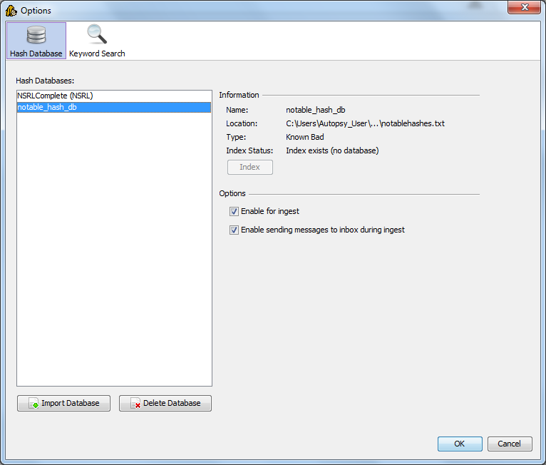

The Hash Database Management window is where you can set and update your hash database information. Hash databases are used to identify files that are 'known'.
Autopsy allows for multiple known bad hash databases to be set. Autopsy supports three formats:
Autopsy can use the NIST NSRL to detect 'known files'. Note that the NSRL contains hashes of 'known files' that may be good or bad depending on your perspective and investigation type. For example, the existence of a piece of financial software may be interesting to your investigation and that software could be in the NSRL. Therefore, Autopsy treats files that are found in the NSRL as simply 'known' and does not specify good or bad. Ingest modules have the option of ignoring files that were found in the NSRL.
To use the NSRL, you must concatenate all of the NSRLFile.txt files together. You can use 'cat' on a Unix system or from within Cygwin to do this.
Autopsy needs an index of the hashset to actualy use a hash database. It can create the index if you import only the hashset. When you select the database from within this window, it will tell you if the index needs to be created. Autopsy uses the hash database management system from The Sleuth Kit. You can manually create an index using the 'hfind' command line tool or use can use Autopsy.
You can also specify only the index file and not use the full hashset - the index file is sufficient to identify known files. This can save space. To do this, specify the .idx file from the Hash Database Management window.
There is an ingest module that will hash the files and look them up in the hashsets. It will flag files that were in the notable hashset and those results will be shown in the Results tree of the Data Explorer.
Other ingest modules are able to use the known status of a file to decide if they should ignore the file or process it.
You can also see the results in the File Search window. There is an option to choose the 'known status'. From here, you can do a search to see all 'known bad' files. From here, you can also choose to ignore all 'known' files that were found in the NSRL. You can also see the status of the file in a column when the file is listed.
